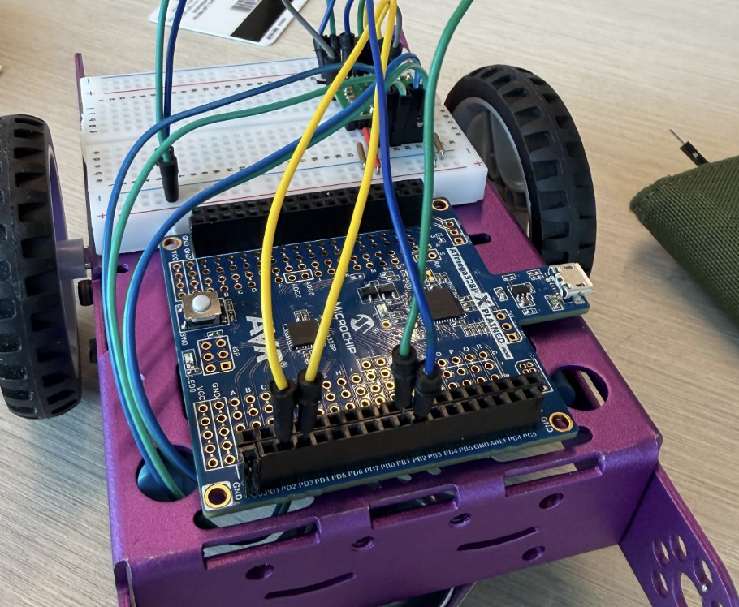
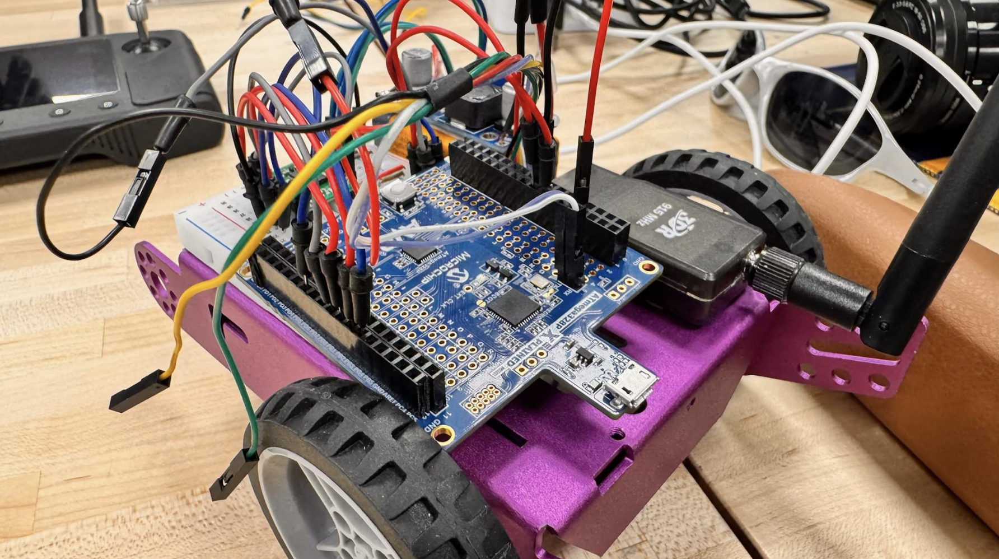
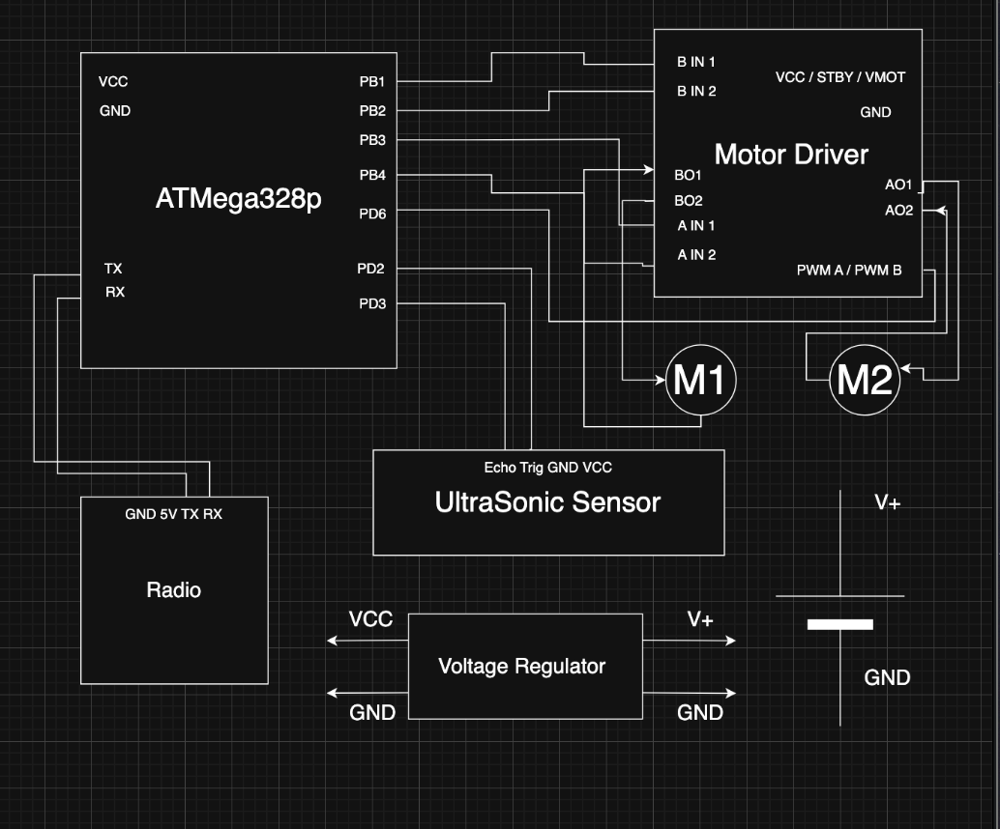

Autonomous Rover



Project Overview
For a team class project, I built an autonomous rover around an ATmega328PB microcontroller. The goal was a standalone system capable of wireless communication with a laptop. The rover has two main features: manual control and obstacle avoidance. For manual control, a laptop connected via radio sends WASD keystrokes to drive the rover forward, in reverse, left, and right. For obstacle avoidance, an ultrasonic sensor detects objects within approximately two inches and automatically steers the rover left to maintain a clear path. The motors use PWM signals to control direction.
Key Features
- Ultrasonic sensor
- Obstacle Avoidance
- Wireless Communication
What I Learned
Through this project, I reinforced a range of embedded systems skills working with DC motors and motor drivers, and writing the C code that drives all of the rover's functionality. I also learned how to work and program ultrasonic sensor, which was a peripheral not taught during the class.